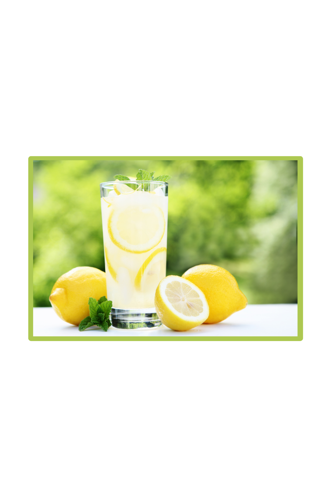

Lemonade

A classic summer drink
Nothing is more refreshing on a hot summer day than a nice, ice cold glass of lemonade.
You only need three ingerdients to make this classic lemonade recipe.
Ingredients
- 6 cups water, divided
- 1 cup granulated sugar
- 1 cup fresh-squeezed lemon juice (seeds removed)
Instructions
- Combine 1 cup water and 1 cup sugar in a small saucepan. Place
over medium-low heat and stir until sugar is dissolved. Remove from
heat and set aside, allow to cool for 10 minutes.
- Pour 1 cup fresh-squeezed lemon juice into a pitcher. Add sugar/water
mixture (simple syrup).
- Add remaining 5 cups (1180ml) water and stir well. Pour over ice and
serve, or transfer to refrigerator and allow to chill several hours
before serving.
Home